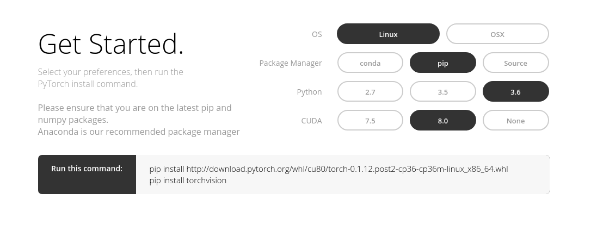
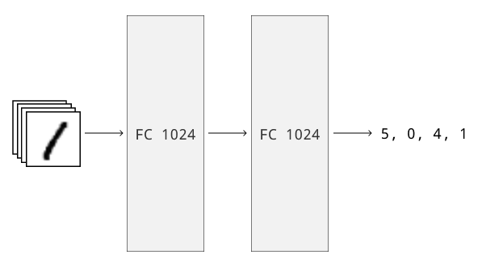
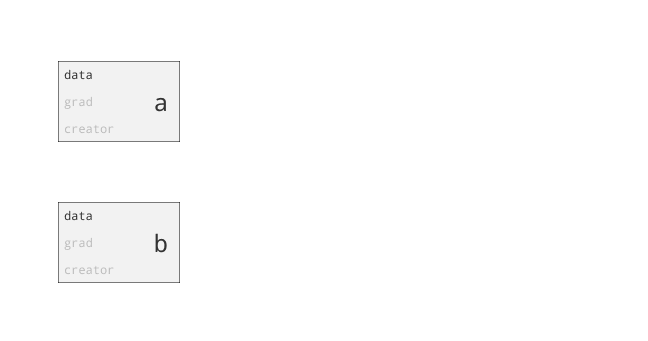

大家好，今天要跟大家介紹PyTorch這個目前正在崛起的深度學習（Deep Learning）框架。深度學習的興起也不過是最近幾年的事情，在這短短時間便有非常多框架出現：TensorFlow、Theano、Keras、Caffe、Torch、PyTorch等等。然而就筆者自身經驗，相較於某些套件無可避免的在使用上與Python格格不入，或功能上受到框架封裝的限制，PyTorch這個以Python為優先考量的套件無疑是對研究者最友善的框架。
根據官方的回覆，PyTorch是從torch-autograd, Chainer, LuaTorch-nn這些框架中尋找靈感的（也是其名稱的由來，但它其實已經跟原本的Torch差非常多了），然而它與Python完美結合的界面才是它為何能快速崛起的原因， 也是本文章的重點。
雖然作為一個深度學習框架的介紹，本文不假設讀者熟悉深度學習的原理。如果你想要先了解深度學習，可以參考台大電機系李宏毅教授的教學影片。然而，本文仍希望使用者
- 對矩陣運算有一定的認識
- 看得懂Python的程式，並能夠撰寫簡單的程式
- 曾經使用命令列(command line)
0. 安裝
安裝PyTorch非常簡單。首先，PyTorch只支援OSX和Linux！所以如果你是Windows的使用者，我們建議使用遠端操作的方式在Linux伺服器上來操作。另外，你還需要知道
- 電腦使用哪一種Python套件管理程式。如果你不知道要這是什麼，假定是pip。
- 你想使用哪一種Python版本。在命令行（command line）上打
python --version可以得到Python的版本。 - 電腦上的CUDA是哪個版本的。沒有CUDA則無法使用GPU運算。
接著，到PyTorch的官網根據你電腦的環境選取對應的選項，然後照著網頁下方的指令輸入即可。

在本文的撰寫過程，PyTorch最新的版本是0.1.12，但是快更新到0.2版了，也許這會在操作上有一些微小的差異。
1. Tensor（張量）以及我們怎麼操作它
在機器學習與PyTorch的世界，Tensor代表一個多維的矩陣。Python世界裡廣泛使用的科學運算套件是NumPy。如果你使用過NumPy，PyTorch的矩陣操作可以說就是NumPy的GPU版本。這些工具可以讓我們自由的創造常數矩陣、加減乘除、轉置(transposing）、切片（slicing）等等想得到的操作都有。
首先先引入所需的套件，然後我們來看看PyTorch常使用的tensor操作。還有非常多有用的操作請參考說明文件（英文）。
import torch
請注意註解裡的維度都是從零開始的（0-based）。
創造矩陣
torch.ones(5, 3) # 創造一個填滿1的矩陣
torch.zeros(5, 3) # 創造一個填滿0的矩陣
torch.eye(4) # 創造一個4x4的單位矩陣
torch.rand(5, 3) # 創造一個元素在[0,1)中隨機分佈的矩陣
torch.randn(5, 3) # 創造一個元素從常態分佈(0, 1)隨機取值的矩陣
矩陣操作
torch.cat((m1, m2), 1) # 將m1和m2兩個矩陣在第一個維度合併起來
torch.stack((m1, m2), 1) # 將m1和m2兩個矩陣在新的維度（第一維）疊起來
m.squeeze(1) # 如果m的第一維的長度是1，則合併這個維度，即
# (A, 1, B) -> (A, B)
m.unsqueeze(1) # m的第一維多一個維度，即
# (A, B) -> (A, 1, B)
m1 + m2 # 矩陣element-wise相加，其他基本運算是一樣的
其他重要操作
m.view(5, 3, -1) # 如果m的元素個數是15的倍數，回傳一個大小為(5, 3, ?)的
# tensor，問號會自動推算。tensor的資料是連動的。
m.expand(5, 3) # 將m擴展到(5, 3)的大小
m.cuda() # 將m搬移到GPU來運算
m.cpu() # 將m搬移到CPU來運算
torch.from_numpy(n) # 回傳一個tensor，其資料和numpy變數是連動的
m.numpy() # 回傳一個numpy變數，其資料和tensor是連動的
2. Variable（變數）以及模型自動更新器
能夠使用GPU進行矩陣運算並不足以讓PyTorch成為一個有用的深度學習套件。我們常常聽到人說「train一個model」，一個模型（model）代表著一系列的運算，將一個代表輸入（可能是文字、音訊、影像等任何你想的到的資料）的矩陣變成結果（可能是文字翻譯、影像辨識結果）的過程。而訓練（training）即是更新模型參數的過程。所有的深度學習套件都能夠讓我們寫程式來使用GPU達到這個目的；然而，使用PyTorch能夠讓我們的程式自然的符合Python簡單、清楚的風格。
我們常常把一個模型看成是一個有向圖（directed graph），意思就是把輸入到輸出的運算過程畫成一個流程圖，其中的方向即代表資料的流向。下圖就是一個簡單的手寫數字辨識模型，圖片矩陣通過兩層維度為1024的layer之後能被辨識成數字。

所以究竟該怎麼訓練一個模型？首先，我們必須先了解誤差（loss）是什麼。誤差代表我們的模型預測出來的結果和真實情況的差距，通常是一個純量（scalar）。得到誤差後，我們通常使用梯度下降法（gradient descent），藉由反向傳播（backpropagation）來更新我們的模型。如果你不知道什麼是梯度下降和反向傳播，你可以想像是一個更新參數的方式，在更新的過程中，誤差將會從結果往資料流向相反的方向傳遞。我們並不是一次就能夠更新到最後的結果；相反的，我們每次只走了一小步（還不一定每次都是正確的方向）。不過我們希望，這些更新的累積能減少誤差，使我們的預測越來越接近真實結果。
如果你想要深入了解這部份的內容，李宏毅教授的教學影片有對於反向傳播的詳細講解。當你實作更進階的模型而需要利用Function物件（本文不會詳細說明）定義自己的梯度公式時，你需要非常熟悉反向傳播的概念。
Variable是PyTorch這個套件的核心物件，我們更新模型的方式完全體現在它的設計中。它不僅用來儲存資料和模型中的變數，也可以直接用它來計算與儲存梯度（gradient）。以下就來說明如何使用Variable來建立一個最簡單的模型。
Variable
一個Variable最重要的屬性（attribute）是data，它是一個Tensor物件，儲存這個變數現在的值。一個Variable的創建與使用方式長這個樣子：
import torch
from torch.autograd import Variable
m1 = torch.ones(5, 3)
m2 = torch.ones(5, 3)
a = Variable(m1)
b = Variable(m2)
c = a + b
如果把c（或c.data）印出來，你會發現他是一個元素都是2的5x3矩陣。
PyTorch做的非常好的一件事就是：幾乎所有前面介紹對Tensor的操作都可以用在Variable上！所以我們使用者只需要熟悉一種語法。然而，搭配前面對於有向圖的說明，大家必須了解到其背後所做的事情是不一樣的！Tensor的操作是單純的資料修改，沒有紀錄；而Variable的操作除了data的資料會有改動，所有的操作也會記錄下來變成一個有向圖，藉由creator這個屬性儲存起來。或許，這裡用一個動畫解釋最容易讓人了解。

Variable還有兩個重要的屬性。
- requires_grad
指定要不要更新這個變數，對於不需要更新的變數可以把他設定成False，可以加快運算。 - volatile
指定需不需要保留紀錄用的變數。指定變數為True代表運算不需要記錄，可以加快運算。如果一個變數的volatile是True，則它的requires_grad一定是False。
簡單來說，對於需要更新的Variable記得將requires_grad設成True，當只需要得到結果而不需要更新的Variable可以將volatile設成True加快運算速度。
Autograd
如同上面所說的，反向傳播是我們現在廣泛使用的更新模型方式。當我們定義了誤差如何計算的同時，其實也隱含定義了反向傳播的傳遞方向。這正是Autograd的運作原理：藉由前面所說的有向圖，PyTorch可以自動幫我們計算梯度。我們只要對於誤差的Variable物件呼叫backward函數，就可以把沿途所用到參數的gradient都計算出來，儲存在各個參數的grad屬性裡。最後，更新每個參數的data值。通常，我們使用優化器（optimizer）來更新它們。
優化器的使用方法也非常簡單。首先在初始化優化器時提供被更新參數的清單。在每一次更新前，先呼叫優化器的zero_grad把上一次更新時用到的梯度歸零（這一步很容易忘記。如果沒有做，backward得到的梯度會被累加）。接著，呼叫backward將參數的grad算出來後，再呼叫step利用儲存的grad和data來計算新的data的值。
就讓我們延續上面的範例來解釋使用原理。
import torch
from torch.autograd import Variable
from torch.optim import SGD
m1 = torch.ones(5, 3)
m2 = torch.ones(5, 3)
# 記得要將requires_grad設成True
a = Variable(m1, requires_grad=True)
b = Variable(m2, requires_grad=True)
# 初始化優化器，使用SGD這個更新方式來更新a和b
optimizer = SGD([a, b], lr=0.1)
for _ in range(10): # 我們示範更新10次
loss = (a + b).sum() # 假設a + b就是我們的loss
optimizer.zero_grad()
loss.backward()
optimizer.step() # 更新
常用的優化器有非常多種：SGD、RMSprop、Adagrad、Adam等等，其中最基本的是SGD，代表Stochastic Gradient Descent。感謝PyTorch良好的架構，選擇不一樣的優化器不會對我們的模型有任何改變。事實上，我們只要將上面程式碼初始化優化器的SGD改變成其他優化器就可以了。不過，不同的優化器可能會因為不同的更新方式而造成最後得到的正確率不同，
最後讓我們簡單重述更新的步驟：
- 操作現有的參數與輸入的變數，得到預測。利用預測和正確答案定義我們的誤差。
- 呼叫優化器的
zero_grad將上次更新的梯度歸零。 - 呼叫誤差的
backward算出所有參數的梯度。 - 呼叫優化器的
step更新參數。
從上面的例子可以看到，我們通常將這些步驟放在一個for迴圈裡，在訓練時更新數千萬次。
3. Module（模組）以及它怎麼那麼簡單
Variable只不過是PyTorch裡建立模型的最小元件。深度學習的模型常常用一層一層的layer來作為變數操作的單位。Layer又是五花八門，常用的有Full-connected layer，Convolutional layer、Recurrent layer等等。每一種layer通常包含不只一個Variable的操作。Pytorch的模組可以把這些操作群組在一起。模組甚至可以包含其他模組，組成一個樹狀結構。如此一來，變數的建立與管理變得十分方便。事實上，我們通常把整個模型包裝成一個模組，這麼做尤其在儲存和載入模型的時候非常有用。
參數？變數？
參數（Parameter）是變數（Variable）的子物件。意思是說，它們能做到的事情幾乎一模一樣。唯一的不同點是，因為Module會維護自己用到參數的集合，當我們將Parameter物件指定給模組的屬性時，它就會被記錄在這個集合裡，而且還會有一個唯一對應的名稱；Variable不會有這種效果。
模組的套疊在這個邏輯也能正確的運作。例如說，子模組的參數也會自動變成父模組的參數。在下面的範例中，nn.Conv2d是個內建的模組，包含兩個參數weight和bias，正確的變成我們自訂模組的參數。
import torch.nn as nn
import torch.nn.functional as F
class Model(nn.Module):
def __init__(self):
super().__init__()
self.conv1 = nn.Conv2d(1, 20, 5) # 註冊了conv1這個名字
self.conv2 = nn.Conv2d(20, 20, 5) # 註冊了conv2這個名字
def forward(self, x):
x = F.relu(self.conv1(x))
return F.relu(self.conv2(x))
print(Model().parameters()) # 會印出4個參數'conv1.weight', 'conv1.bias',
# 'conv2.weight', 'conv2.bias'的值
簡單來說，參數才是我們使用Module時候會面對到的物件，但一般來說這些差異都已經被包裝起來了，就如同上面的範例一樣。只有要從基礎開始自訂自己的Module的時候會需要小心這個差異。在整篇文章中，我們都有小心的使用這兩個不同的名稱。
那怎麼使用模組呢？一般來說，我們只需要定義模組創建的時候用到的參數，以及模組從輸入到輸出做了怎樣的操作。前者被定義在__init__函數裡，後者被定義在forward函數裡。讓我們再看一次上面的範例：
import torch.nn as nn
import torch.nn.functional as F
class Model(nn.Module):
def __init__(self):
"""
在__init__函數裡定義這個模組會用到的參數
"""
super().__init__()
self.conv1 = nn.Conv2d(1, 20, 5)
self.conv2 = nn.Conv2d(20, 20, 5)
def forward(self, x):
"""
在forward函數裡定義輸入和輸出值的關係
"""
x = F.relu(self.conv1(x))
return F.relu(self.conv2(x))
# 假設 _input是一個變數
model = Model()
y = model(_input) # y就是我們模組的輸出
一切就只有這麼簡單！你可以發現，PyTorch使用Python class來代表管理一群參數的單位，我們能夠用物件的屬性直接存取內部用到的參數，這樣的架構是非常直覺並符合語義（semantics）的。
最後我們列舉幾個Module非常重要的功能：
-
將資料搬到CPU/GPU
之前提過PyTorch支援GPU運算。Module可以讓我們一次把所有包含的變數一次搬到CPU/GPU。注意到兩個Tensor的運算只能在同一個CPU/GPU上執行，所以將所有變數一次搬移是個很重要的功能。呼叫cpu()和cuda()可以執行這個功能。另外，我們可以用torch.cuda.is_available()來檢查我們可不可以使用CUDA來運算。model = Model() if torch.cuda.is_available(): model.cuda() -
訓練/運算模式
有很多模組在訓練的時候和預測的時候用到同樣的參數，但是執行的運算不一樣，例如Dropout、Batch Normalization等。因此在訓練和運算的時候，記得分別呼叫train()和eval()來切換模式。一般來說，我們會分別用不同的函式來包裝訓練和預測的功能。所以一個典型的程式會長的像下面這個樣子。
def update(model, loader): model.train() # ... def evaluate(model, loader): model.eval() # ... -
儲存/載入模型
當我們訓練完一個模型，最重要的當然是把它儲存起來在日後使用。當我們呼叫state_dict()，會拿到一個參數名稱對應到值的字典，然後我們可以呼叫PyTorch的內建函式把它儲存起來。torch.save(model.state_dict(), PATH)日後要拿回來的時候，可以呼叫
load_state_dict把值載入到對應的參數名稱。model.load_state_dict(torch.load(PATH))
4. 結論以及PyTorch為什麼這麼好用
整篇文章中我們專注在解釋PyTorch中各個元件最基本的使用方法。最後就讓我們來談談PyTorch的特點。世界上並沒有最好的框架，只有最適合某個框架的使用情境。希望這裡的說明可以讓讀者能了解這些特性，進而選擇適合的框架。
-
與Python、NumPy的操作十分類似
PyTorch中Tensor的使用方式就和NumPy差不多，與NumPy之間的轉換也是非常容易。不過就算沒有用過NumPy，也許你也能夠看出來Tensor的操作就和使用一個普通的Python變數沒有什麼差異。由於這些操作的方法有統一的規則，就算臨時忘記要用的功能，查閱說明文件很快就能夠找到。 -
動態建立模型
上述利用autograd更新的過程揭露了PyTorch和TensorFlow、Theano等其他深度學習框架最不一樣的差異：PyTorch會動態的在每一次更新/計算結果的過程建立有向圖，每一行對Variable的操作都是建立模型的過程；其他框架會先編譯整個模型再開始更新/計算。也許有人會懷疑，每一次都要重新建立模型是否會讓運算速度變慢，但就我們的使用經驗是感覺不出來的。這個動態建立有向圖的過程有兩個好處：
- 當我們的模型有錯誤的時候，PyTorch會被迫中止在發生錯誤的地方，並立即回報錯誤原因。其他框架如Keras，因為需要靜態建立模型並呼叫
compile，會在執行編譯時才回報錯誤的原因。要從錯誤的原因回推造成錯誤的程式碼不一定非常容易，這方面的差異大大的影響我們除錯的速度。 - 動態的建立模型代表我們能夠根據每一次的輸入來建立對應的模型，這點對於某些特殊的RNN模型特別有用，在TensorFlow這樣靜態建立模型的框架中是很難實踐的。
PyTorch與靜態建立模型的框架（TensorFlow）比較
如果你有使用過TensorFlow，這個段落的描述應該十分熟悉。對於Tensorflow，如果要根據輸入來判斷執行不同的運算，唯一的做法是針對每一種可能的操作都預先建立模型，再利用一個判斷的物件tf.cond來執行不同的操作，如下面的範例（改寫自一篇StackOverflow的回答）x = tf.placeholder(tf.float32, shape=[None, 20], name="x_input") condition = tf.placeholder(tf.int32, shape=[], name="condition") W = tf.Variable(tf.zeros([20, 10]), name="weights") b = tf.Variable(tf.zeros([10]), name="bias") y = tf.cond(condition > 0, lambda: tf.matmul(x, W) + b, lambda: tf.matmul(x, W) - b)注意最後三行，對於
condition > 0的兩種操作都會在靜態建立模型時被執行到，而且必須被包裝成函式的型態（這裡使用lambda來建立匿名函式）。同樣的情況也出現在需要用到迴圈的模型。筆者認為這樣子的架構下寫出來的程式是十分迂迴，不符合直覺的。以下是PyTorch版本，因為是動態建立模型，直接使用一般的Python運算式。x = Variable(torch.randn(32, 20), requires_grad=True) W = Variable(torch.zeros(20, 10), requires_grad=True) b = Variable(torch.zeros(10), requires_grad=True) y = x.mm(W) if condition > 0: y = y + b.expand_as(y) else: y = y - b.expand_as(y)
- 當我們的模型有錯誤的時候，PyTorch會被迫中止在發生錯誤的地方，並立即回報錯誤原因。其他框架如Keras，因為需要靜態建立模型並呼叫
-
模組與Python物件的對應
PyTorch巧妙的將Module物件與Python中的class對應。模組中的參數會對應到Python物件的屬性，而子模組的參數自動變成父模組的參數。這些特性讓我們很容易取得和修改某個參數的值。相較於Tensorflow使用虛擬的命名空間（variable_scope與name_scope）來管理參數，這個方式比較接近Python處理物件的方式，變數的共用也更容易。
PyTorch相較其他框架還不夠成熟，在這篇文章完成時也不過邁向0.2版，文件也沒有其他大型框架多元，不過本身的架構非常容易上手，是其他框架無法比擬的。希望這篇文章能夠成為了解PyTorch的第一步，在接下來的教學文章中，會有真實建立一個模型與如何訓練的詳細說明。